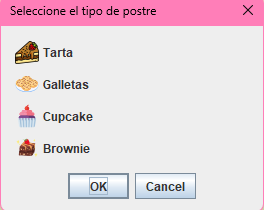

Seleccionar Tipo de Postre
Elige el tipo de postre que deseas crear utilizando las opciones disponibles.
Opciones: Tarta, Galletas, Cupcake, Brownie.
Pasos:
- Haz clic en el botón Seleccionar tipo de postre.
- Selecciona una opción de las disponibles utilizando los botones de radio.
- Presiona Aceptar para confirmar.
